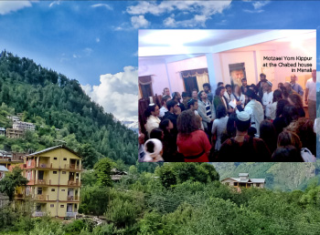
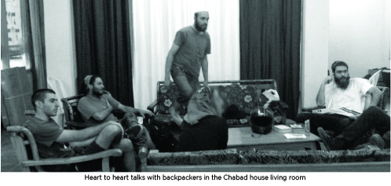
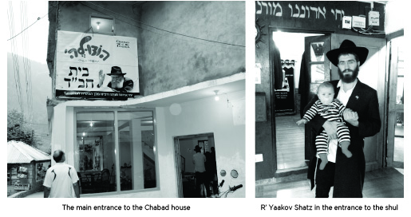
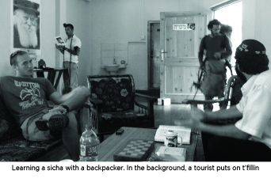

Spring Summer Soul Season in Manali India
Numerous Jews and Israelis visit Manali, a captivating tourist site in India. * The shluchim R’ Yaakov Shatz and R’ Shneur Pugatch and their wives are there to help them.

In the past, Manali, which is surrounded by the Himalayan Mountains, was a quiet, pastoral place. In recent years, however, it has become a bustling tourist area. In the summer it is visited by thousands of tourists, but in the winter, due to the harsh weather, only the locals remain. The snow often piles up two meters high and the cold is fierce.
The Chabad house is open only during the tourist season. The season begins before Pesach and ends about two weeks after Sukkos. As in other Indian cities, avoda zara is rampant, but, unlike other cities, there are hardly any ashrams. This city is the starting point for dangerous treks in the magnificent mountains or for those seeking serenity.
The old part of Manali is built on a mountain slope, and hundreds of Israeli tourists stay there every summer. There you can find restaurants and guest houses, along with stands selling T-shirts, packs, shawls, scarves, painted silks and handiwork to tourists. The Chabad house stands out. It is a beautiful three story building with a hall for events that can contain 200 seats, a kosher restaurant, a magnificent shul, a mikva, a library, and residential quarters for the shluchim.
The Chabad house in Manali is one of the biggest and nicest Chabad houses in India and the East, a jewel of a place where intense outreach is done around the clock.
“Until today, I don’t know how it happened,” admits one of the shluchim, Yaakov Shatz. “The Rebbe wanted a mikva and we looked for a good spot to build a mikva and found the shell of a three story building. By divine providence, the building began to take shape. It’s beautiful and spacious. Every Jewish tourist or Israeli who comes to Manali is exposed to Chabad’s work.”
CHABAD HOUSE MOST OF THE YEAR

“We arrived six years ago on Merkos Shlichus after our year on K’vutza. I spent some time in Rishikesh and then went to Kasol where R’ Yoel Caplin and R’ Danny Winderbaum are.
“Kasol is also located in northern India. Time and again we heard from tourists about what a pity it is that there is no Chabad house in Manali where there is a large concentration of Israeli tourists. This came up many times until we decided to do something about it. We thought that for the first season, at least, we would provide kosher food for Jews who come to Manali. Many traditional Jews have been visiting India lately and so we decided to open a kosher restaurant, while looking into the possibility of broadening the activities in the city.
“With the help of the shluchim in Kasol, we rented a small building in Manali that used to be a grocery store. We brought chickens from Kasol. After a few days of arranging things, we announced the opening of a restaurant. Many young people visited the place and they didn’t just eat; we got into conversations about faith that lasted late into the night.
“On Shabbos we arranged meals and in a place that could hold fifty people, a hundred and more squeezed in. There were times that dozens of people sat outside and waited for a place. We started a shiur in Tanya and the Rebbe’s sichos. We saw that there was an urgent need for ongoing outreach in this city.”
The shluchim then prepared for the next season:
“We wrote to the Rebbe and opened to a letter in which the Rebbe wrote about a Chanukas Ha’bayis and blessed us with success and expansion. We went to Manali and began looking for a suitable building for a permanent Chabad house. After a few days of looking, along with exhausting negotiations, we found a large, three story building that was a shell without walls. The owner agreed to rent it to us for a long time on condition that we renovate it at our expense.
G-D LOVES YOU
The work at the Chabad house in Manali, as in the rest of the sub-continent, is divided, from a shlichus perspective, into two main areas—material and spiritual.
“We supply kosher food, help extricate the injured or the dead, G-d forbid, and help those who are sick. We have good connections with the police and we help Israelis who get into trouble. On the spiritual side, we give shiurim in Chassidus and halacha, and have one-on-one talks with the tourists. We also provide a mikva, and have t’fillos whenever we can get a minyan.”
R’ Pugatch relates:
“When we arrived here, we wrote to the Rebbe about the building we wanted to rent. The Rebbe’s answer had to do with the need to build a mikva. We decided that the place we would take would have to be one that would enable us to build a mikva. After we rented the building, we called R’ Boaz Lerner, an expert in mikvaos, and he guided us in how to start building the mikva. We did not have the money for it but we went l’chat’chilla aribber.
“After a few days, a wealthy Jew from Manhattan called me. I had gotten to know him during my years on K’vutza. He had gotten very involved in Judaism and once a month he made it a habit to visit 770 and write to the Rebbe through the Igros Kodesh. He disbursed his maaser based on the answer he opened to. He told me that he had just written to the Rebbe and the answer was about a mikva, but he had no idea which mikva to contribute toward.
“I could not believe what I was hearing. I told him where I was and about the answer we had gotten from the Rebbe about building a mikva. So the first donation to the mikva, a very large sum, came unexpectedly. We felt that the Rebbe wanted the mikva and made sure that we would get the money for it.
“Within a year and a half the mikva was built and operational. Along with the mikva the other parts of the Chabad house were built too. The construction itself took a year, in the course of which there was another incredible hashgacha pratis.
“During the winter, when we were in Eretz Yisroel, we made an agreement with the contractor that he would start building and would take pictures of every part he built. He would send the pictures to us for our approval and we would send him the money. We estimated that the work would be completed by the end of the winter. As is known, India has its own pace and when we arrived in the summer, they were still in the middle of construction. We found ourselves supervising the construction.
“In the meantime, local businessmen had begun returning to the city and opening their stores for the tourist season. They were angry at us because our big building blocked part of the scenery. They made a lot of problems for us, did not let the trucks in to the construction site, and threatened the workers. They claimed it prevented the tourists from going to them but we kept going until the building was finished. Then we held a big Chanukas Ha’bayis.
“In the middle of the farbrengen, one of the neighbors who had opposed the construction walked in and said candidly, ‘It seems G-d loves you. You finished right before the law goes into effect in which you could not build.’ We knew nothing about this. Basically, if we had continued building, we would have been fined heavily. They were hoping we wouldn’t finish on time and then they would be able to cause us even more problems, but it didn’t go their way.”
DIVINE PROVIDENCE IS MORE APPARENT IN LOWLY PLACES

“There was a nice fellow by the name of Raz, a kibbutznik from the north. He was a quiet sort and spent several months in Manali,” recalled R’ Shatz. “I would often meet him on the street. I would see him standing opposite the Chabad house but he always refused to come in.
“For a while I noticed that he would come every day and stand opposite the Chabad house and stare at the Rebbe’s picture, then continue on his way. I decided to confront him and asked, ‘Raz, why do you look at the picture?’ He said, ‘I am not religious and was taught to hate religious people, but your Rebbe’s face calms me. I can’t explain it logically, but that’s the reality.’
“I was quite surprised by this and thought, if that’s the case, I’m not giving up on him. Some more weeks went by and his opposition weakened, then melted, and he finally agreed to come in and look around, but just for a short time. He came in, glanced around and ran out.
“One Erev Shabbos I invited him for Kabbalas Shabbos. I described the atmosphere and promised that he would enjoy it. To my surprise he agreed to come and indeed, he was very impressed. ‘If I had known that that’s the way Shabbos is celebrated, I would have joined earlier,’ he said.
“We decided to strike while the iron was hot and I invited him for Shabbos morning and he came. That Shabbos there was a minyan and he was part of the minyan. I knew that he had never had an aliya to the Torah and I decided to give him one. At the beginning of the Torah reading I announced, ‘Yaamod Raz ben?’ He said, ‘Raz Menachem.’ The name Raz is typically Israeli, but Menachem?
“During the meal I asked him about this but he didn’t know the answer. On Motzaei Shabbos he called his mother and asked why he was given the name Menachem. She was surprised that she had never told him the reason. ‘There is a rabbi in New York called the Lubavitcher Rebbe and it was thanks to him that you were born. We did not have children for many years and the doctors gave up and then we met someone who had gotten involved with Chabad and he wrote to the Rebbe with us. We received a bracha and that is how you came to be born. As an expression of our appreciation, we named you for him.’
“Raz was shaken up by this discovery. A number of things suddenly connected for him. He became a regular guest of ours. When he returned to Eretz Yisroel he committed to keep Shabbos and to learn Chassidus and today he is in the process of deepening his connection with his Jewish roots.
“We have endless stories of neshamos. There is an old American Jew who lives in a distant village and comes to us only on Yom Kippur. He speaks English with a Yiddish inflection. He is usually not interested in talking. He comes at the beginning of Yom Kippur, davens and leaves right after Havdala. Last Yom Kippur we actually got into a conversation and he promised to come on other holidays during the year. He is a riddle to us.
“There are those who think they are not accomplishing, but they have no idea to what extent every good action has an effect, even when the results are not readily apparent. I’ll give you an example. This year, a young Israeli girl with a Russian background came here. She came every day to the restaurant, sometimes twice a day. She seemed distant from Torah. One day, she came over to ask some questions about kashrus.
“I asked her whether she kept kashrus and she said yes. When she was a little girl, her parents moved from Russia and they put her in a Chabad preschool in Bat Yam. She went on to public school from there but two things stayed with her: Shabbos and kashrus. In her parents’ home they mix meat and milk but she has her own dishes. The family respects her choice. She herself doesn’t know why she insists on keeping this, but that’s the way she is.”
WILL THE MONK END UP IN 770?
“On Shabbos and Yomim Tovim we sometimes get a hundred people at the Chabad house. In order to run things smoothly we need help. Every season there are some Israelis who take a special liking to the Chabad house and lend a hand to the shluchim.
“There’s a nice guy named Ronen, who is warm to Jewish things and loves the atmosphere and life in India. He comes to Manali every summer and helps out
“He doesn’t dress like a Lubavitcher, but his p’nimius is that of a Chassid. He knows many sichos of the Rebbe and can answer all the difficult questions. He knows how to speak the language of the people who come here and many people were niskarev through him. When he comes to town he becomes a member of the household. When he came to Manali the last time he told me a remarkable thing. He spent time in the south of India and then took a train heading north, to us. It’s a week-long trip, traveling day and night.
“At one of the stations a Tibetan monk got on, wearing his orange robes and with their distinctive hairstyle, and sat down facing him. He could see that the monk was a Westerner and not a local. Ronen, a typical direct Israeli, started talking to him. The monk asked him whether he belonged to the Jewish people. When he said yes, the man said he was originally from England and although his father was a British gentile, his mother was Jewish. He spent years running away from his Judaism. This is why he left Britain and was living in India for so many years until he became a monk.
“Ronen took the opportunity to lace into him with some Jewish rebuke. The monk finally conceded he had pangs of conscience and said for a long time now he also felt disappointed in his monastic choice. For many years he truly believed he had found the truth, but lately he discovered that what he believed in is full of lies. They spoke for hours and before parting, Ronen gave him his email address and suggested that he do an online search about the Lubavitcher Rebbe. ‘Only he can get you out of the mud you’re in,’ he concluded.
“A few days passed and the monk sent Ronen an email with a picture of the Rebbe and asked whether he was referring to this man. Ronen said yes. A few weeks went by and Ronen showed me their correspondence. The monk had written that he was sitting and studying Chassidic works and if he concluded that Judaism is the true path, he would remove his monk’s robe and travel to 770 and become religiously observant.”
FROM THE WORLD OF AVODA ZARA TO THE WORLD OF THE YESHIVA
Five years of outreach in Manali produced many mekuravim including some who went “all the way.”
“There’s a fellow by the name of Chein,” said R’ Shatz, “who came to tour in India and got deep into the local idol worship. The first time he entered the Chabad house he was holding a stick with various images on it. He was convinced he had been given powers to be a celebrated leader who prophesied. I won’t forget that first conversation I had with him. He so believed the nonsense that he heard that he thought he could easily reach the level of Moshe Rabbeinu.
“We spoke for several hours and debunked one by one, all the nonsense that he believed. We explained to him why what he believed was idol worship and why he, as a Jew, was far more elevated than all the avoda zara that he bowed to. When we saw that he was immersed in the false philosophies, we dropped the debate and decided to learn together in the belief that a little light would dispel a lot of darkness. It took time but to his credit let it be said that he came every day to learn. Little by little, he dropped his false beliefs and began to get involved in Judaism.
“From the Chabad house he went back to Eretz Yisroel and went to a Chabad yeshiva. This year he returned to India, this time in order to help on shlichus. It is still hard for him to wear a hat and jacket, but with some more months spent at the Chabad house, that will come too. If you met him today, you would be sure he was born to a Lubavitcher family.”
There are others like him who became Chassidim. R’ Shneur Pugatch has an interesting story as follows:
“There was a fellow who came to Manali in order to undertake a challenging hike. The first Shabbos he came to us for a Shabbos meal and, as is our practice, we connected everything we said to Moshiach. I spoke about the Rebbe being the Nasi Ha’dor with whom we can consult through the Igros Kodesh. This fellow, who came from a home that was far from Jewish practice, loved the idea and wanted to write to the Rebbe.
“He didn’t wait till Sunday; that Motzaei Shabbos he came to the Chabad house to write his letter. The Rebbe’s answer that he opened to had to do with the mitzva of tzitzis. He took it seriously and took tzitzis from us and began wearing them. He still did not wear a yarmulke and he had long hair, but he wore tzitzis. To whoever pointed out the lack of consistency to him he proudly said, ‘Just like Indians have their way of dress, Jews wear tzitzis.’
“Two years later, when I was in Eretz Yisroel, one of our donors asked me to come to Tzfas because he was donating a Torah to a shul there. I asked the hanhala of the yeshiva to send a minyan of bachurim to dance and bring simcha to the event.
“At the beginning of the event, a bachur came over to me and asked whether I recognized him. I looked at him but did not know who he was. He looked like a typical Lubavitcher bachur, with a beard, hat, and jacket. He laughed and asked me whether I remembered the guy with the tzitzis. Then it hit me. I simply couldn’t get over it …”
***
There are many young people who, although they don’t turn into Chassidim, commit to some mitzva or another that they keep all their lives. R’ Pugatch relates:
“There’s a fellow who came from a home that was very distant from everything Jewish. He started by attending our Shabbos meals and farbrengens and then came to the shiurim. One time we asked each person attending to commit to some mitzva or good deed in order to hasten the Geula. We were surprised when he decided to commit to putting on t’fillin.
“One day later he went with friends on a three week motorcycling trip. He still did not have his own t’fillin so I agreed to lend him mine. They were supposed to return in three weeks but first showed up over a month later with an incredible story.
“He said it wasn’t enough for him that he put on t’fillin; every morning, before heading out, the entire group put on t’fillin! They experienced miracles and hashgacha pratis on the way and they attributed it to the mitzva of t’fillin. One day he was riding down a narrow road when a bus suddenly appeared opposite him. He veered to the side, as much as he could. When the bus passed he found himself flying off the side of the road and rolling down a cliff forty meters high. He said he screamed Shma Yisroel and was sure his life was over.
“He found himself in a tree with the motorcycle thrown a few meters off to the side and the t’fillin peeking through from the bag that ripped. He rubbed his eyes and checked himself and saw that he was not injured. The Indians who got off the bus could not believe their eyes when they saw him climbing back up. He said he knew it was in the merit of the t’fillin that he had been saved.”
SOULS I HAVE MADE

“One day she received a frightening call from Eretz Yisroel that her brother had had a stroke and was in critical condition. She came to the Chabad house in hysterics and we had to calm her down. ‘Why is G-d taking him?’ she screamed. We suggested that she write to the Rebbe. The answer she opened to was clear. The Rebbe wrote, regarding the health situation, it was not as bad as they thought and it was only a test. The Rebbe wished a speedy recovery.
“We read it and reassured her. We explained that according to this letter, there was no reason to worry and all would be fine, with G-d’s help. This was on a Thursday. On Friday they told her that the doctors said that the situation was critical and there was imminent danger to his life and she should return home to say goodbye to him. Despite what she was told, we remained firm and advised her to stay in India. It was a big test for us too, as we stuck to what the Rebbe said despite the reality which seemed exactly the opposite.
“On Shabbos, lively discussions ensued among the tourists about this. Many of them were curious to see what would develop. On Motzaei Shabbos she called and was astounded to hear that on Shabbos, a sudden change in his condition had taken place. He was completely out of danger and had awoken from his coma. She told all the tourists about this miracle.
“Many of them wanted to write to the Rebbe through the Igros Kodesh. By the way, she had committed to convincing her brother to put on t’fillin every morning. She told me afterward, in a conversation from Eretz Yisroel, that when he was released from the hospital she told him about what she had gone through and he agreed to start putting on t’fillin.
“Here is another story. There was a girl who came to Manali who was confused about how to proceed in life. She had come to India to ‘find herself.’ She grew up in a typical home in Haifa, far from mitzva observance, and as part of her search for meaning in life she decided to visit the Chabad house and listen to what Judaism has to offer. For the first time she heard about basic mitzvos in Judaism. I remember that even we were taken aback over how a Jew born and raised in Eretz Yisroel did not know the most basic things.
“After every shiur with my wife, she would be so inspired by what they learned. One day she heard me talking to a tourist and telling him about writing to the Rebbe through the Igros Kodesh. She asked my wife about this and then said she wanted to write too. She took it seriously and wrote a long letter about everything that had occurred to her in recent years and the philosophy by which she had been living her life, a philosophy which blew up in her face.
“The answer she opened to was astounding. In a long and comprehensive letter, the Rebbe described the mistake behind the kibbutz system of education and answered all her questions. A few days later she was supposed to fly back to Eretz Yisroel and together with my wife, arranged to join a Chassidic seminary in Yerushalayim. She is presently making significant strides toward a life of Torah and mitzvos. She recently spoke to my wife and told her excitedly about how greatly Chassidus changed her life and how the Rebbe had shown her the true purpose in life.
“In our second year in Manali,” said R’ Pugatch, “we went down to the river in order to immerse dishes that we bought for the restaurant. Some European non-Jews were standing there and one of them came over to us and said that the picture of the man on the front of the Chabad house warmed his heart. Every day he looked at the picture because it calmed him. I told him that it was the Lubavitcher Rebbe. ‘If you are not Jewish,’ I said, ‘at least commit to the Seven Noachide Laws,’ and I explained to him and his friends what that is about.
“He laughed and said that although he wasn’t Jewish, his mother was Jewish. ‘Well, in that case, you are Jewish too!’ I said and immediately offered to make him a bar mitzva with t’fillin. He was taken aback and it was his gentile friends who liked the idea and convinced him to listen to us. We explained what t’fillin are and the inner significance for every Jew. He was excited and on the spot we arranged to travel together to the little hut he lived in where he would put on t’fillin for the first time in his life. Then he would celebrate together with his friends.
“That’s what we did. He put on t’fillin and then he danced with his friends. In this hut there was also an Israeli girl from Tel Aviv who, for some reason, had joined this group of Europeans. When she saw this outburst of Jewish pride, she was very moved and began visiting the Chabad house almost every day and became very interested in Judaism. Today, she is in Tel Aviv and we are in touch with her as she takes her first steps toward a life of mitzvos. Thanks to those gentiles we were mekarev both him and her.”
MOSHIACH CENTER STAGE
There is no need to ask these shluchim about what they do regarding Moshiach, as everything about the Chabad house shouts out “chai v’kayam.”
“Moshiach is the main thing, the beginning, middle and end,” says R’ Shatz. “It’s the most interesting topic to the tourists. People ‘live’ Moshiach even if they still don’t know the Rebbe’s sichos on the subject. Many people go to India solely for the purpose of getting answers to the meaning of life. They seek truth and the truth to us Chassidim is Moshiach.
“Those who say that talking about Moshiach turns people off are, apparently, people who have not been involved in hafatza in many years. When Moshiach is properly explained, it is accepted. People quickly realize that ‘Yechi’ is not an empty slogan; nor is it a hope or a wish. It is a sincere belief that the Rebbe will redeem us. Every question that is asked here in the Chabad house has an answer anchored in Jewish-halachic sources and not merely in Chassidishe hergesh.”
As for plans for the future, my question brings a hint of a smile to the faces of the shluchim:
“We built a nice building and now we need to use the space to the maximum effect,” said R’ Pugatch. R’ Shatz added that their plan is to start a yeshiva program in which miskarvim will learn Nigleh and Chassidus fulltime and be provided with full room and board.
In conclusion, I asked the shluchim about the difficulties in going on a shlichus like this:
“I will give you an honest answer,” said R’ Shatz. “When we were bachurim and went on Merkos Shlichus, it was easier. When married it is harder, especially for the wife. The isolation and physical distance from family is particularly hard for her. To be in a primitive place for half a year with long electrical blackouts, when you are forced to live by candlelight and you have a year old child, is really not easy. Yet this is tempered by the enormity of the shlichus; Jews who accept the yoke of mitzvos, Jews who are exposed to Judaism for the first time. This provides tremendous satisfaction.”
Nosson Avrohom. "Spring Summer Soul Season in Manali India." Beis Moshiach, no. 909 (December 30, 2013).